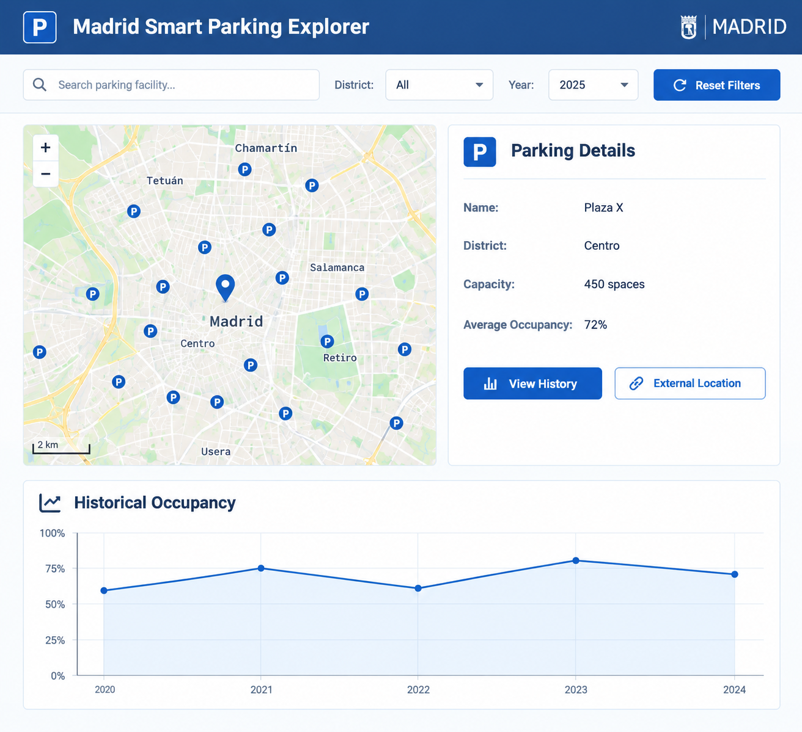

The proposed application is a Madrid Smart Parking Explorer, a web application for exploring municipal parking facilities in Madrid and their historical occupancy information.
The application combines the municipal parking inventory dataset with the historical parking occupancy dataset. It provides users with a map-based interface to explore parking facilities, inspect their characteristics, and analyze how their occupancy has changed over time.
The application will also demonstrate how the selected datasets can be integrated and published as Linked Data.
FR1 — Display Parking Facilities
The application shall display municipal parking facilities on an interactive map. Each parking facility shall be represented as a geographic point when sufficient location information is available.
FR2 — Search for Parking Facilities
Users shall be able to search for a parking facility by its name or other available identifier.
FR3 — Filter Parking Facilities
Users shall be able to filter parking facilities according to available attributes, such as:
FR4 — Display Parking Information
When a user selects a parking facility, the application shall display the available information about that facility, including:
FR5 — Display Historical Occupancy
The application shall display historical occupancy information for a selected parking facility. Users shall be able to select a year or time period and inspect the corresponding occupancy data.
FR6 — Visualize Occupancy Trends
The application shall provide a graphical visualization of historical occupancy. For example, occupancy can be displayed as a line chart showing changes over months or years.
FR7 — Integrate the Selected Datasets
The application shall integrate the municipal parking inventory data with the historical occupancy data. A parking facility represented in the inventory dataset shall be connected to its corresponding historical occupancy observations.
FR8 — Provide Linked Data
The application shall represent relevant entities and relationships as Linked Data. Parking facilities shall be associated with geographic entities where possible, allowing them to be connected with external geographic or open-data resources.
FR9 — Display External Links
When an entity can be linked to an external resource, the application shall provide a link to that resource, such as an OpenStreetMap or other Linked Data resource.
NFR1 — Usability
The application shall provide a simple web interface that allows users to explore parking facilities without requiring knowledge of RDF or SPARQL.
NFR2 — Data Consistency
Information displayed by the application shall be derived from the selected datasets and their Linked Data representation.
NFR3 — Accessibility
Important information shall be accessible through textual interface components and shall not depend exclusively on visual map elements.
NFR4 — Performance
The application shall provide reasonable response times when searching, filtering, and displaying parking facilities and historical occupancy information.
NFR5 — Open Data Compliance
The application shall preserve the attribution and licensing requirements of the source datasets when redistributing or displaying their data.
The main interface is composed of a search and filtering area, an interactive map, a parking information panel, and a historical occupancy visualization.
